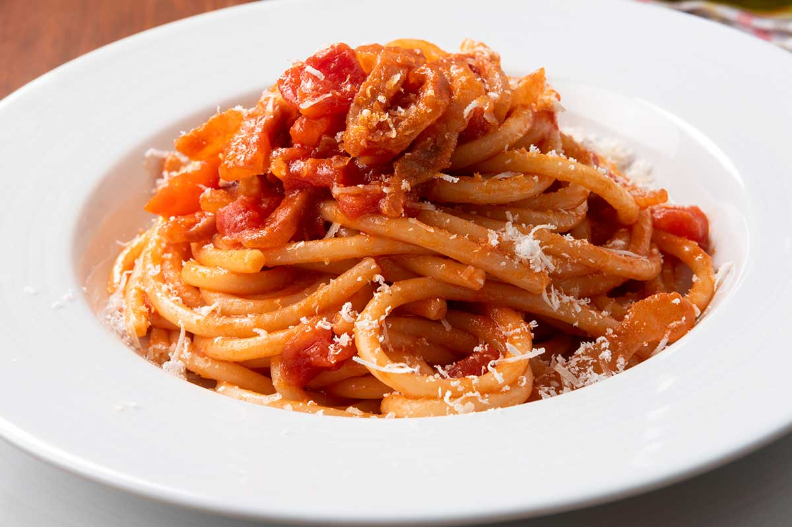
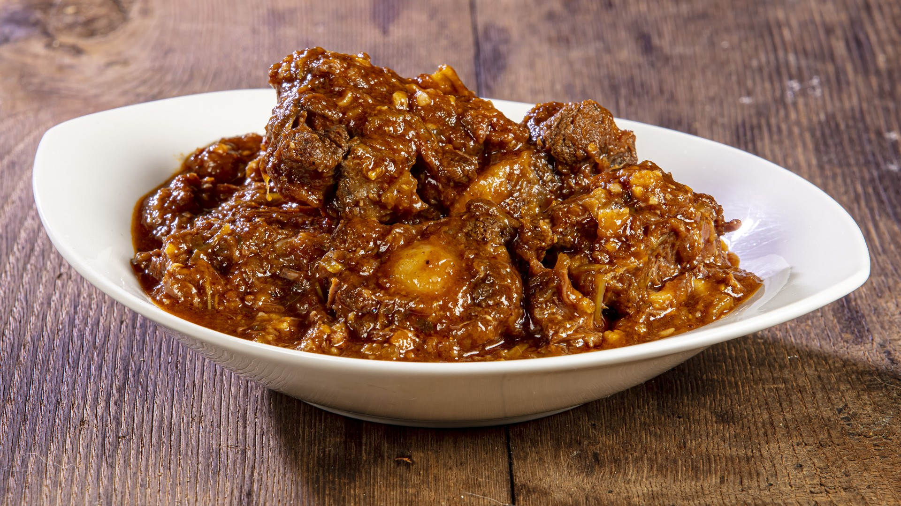

LAZIO
Lazio – Tradizione romana e sapori decisi
La cucina del Lazio è un concentrato di piatti robusti e saporiti, nati dalla cultura contadina e dalla storia millenaria di Roma.
Tra i protagonisti troviamo paste fresche come la carbonara, l’amatriciana e la cacio e pepe, insieme a piatti di carne e ricette di stagione
che valorizzano ingredienti semplici ma gustosi. Un viaggio culinario nel cuore della tradizione romana.
SPECIALITA'

CARBONARA
Descrizione:
La Carbonara è un piatto simbolo della cucina romana, preparato con spaghetti conditi con una crema di uova, pecorino romano, guanciale croccante
e una spolverata di pepe nero. La ricetta tradizionale esclude categoricamente la panna, per mantenere il gusto autentico e cremoso.
Curiosità:
Si dice che la Carbonara sia nata nel secondo dopoguerra, quando i soldati americani portarono in Italia il bacon e le uova in polvere,
ingredienti che si mescolarono con quelli locali per creare questo piatto unico.

AMATRICIANA
Descrizione:
L’Amatriciana è una pasta tradizionale originaria di Amatrice, città del Lazio. Di solito si usa il bucatino condito con guanciale rosolato,
pomodoro fresco e pecorino romano grattugiato. Il risultato è un sugo saporito, leggermente piccante e molto apprezzato.
Curiosità:
In passato, l’Amatriciana era conosciuta come “Matriciana” e non prevedeva l’uso del pomodoro, introdotto solo nel ‘700 dopo la scoperta delle Americhe

CODA ALLA VACCINARA
Descrizione:
La Coda alla vaccinara è uno stufato tipico romano a base di coda di bue, cotta lentamente con sedano, pomodoro, pinoli e uvetta.
È un piatto ricco e saporito, nato come cibo degli “vaccinari” (i macellai di bovini) e oggi uno dei simboli della cucina popolare romana.
Curiosità:
L’aggiunta di pinoli e uvetta dona al piatto un equilibrio dolce-salato unico nel suo genere, tipico delle ricette della tradizione contadina romana.
CARTA DEI VINI
FRASCATI SUPERIORE
Descrizione:
Il Frascati Superiore è uno dei vini bianchi più noti del Lazio, prodotto nelle colline intorno a Roma.
Fresco e secco, presenta profumi delicati di fiori bianchi, frutta fresca e una leggera nota di mandorla.
La sua leggerezza e freschezza lo rendono ideale per accompagnare piatti tradizionali come la carbonara, piatti di pesce e antipasti leggeri.